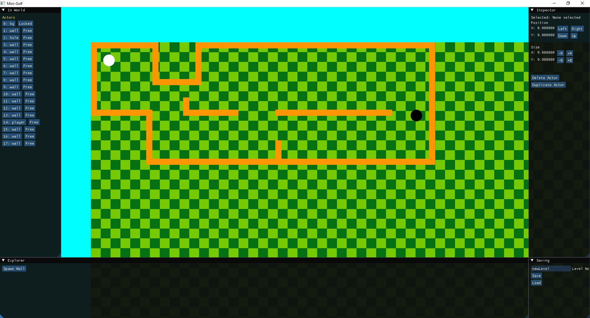
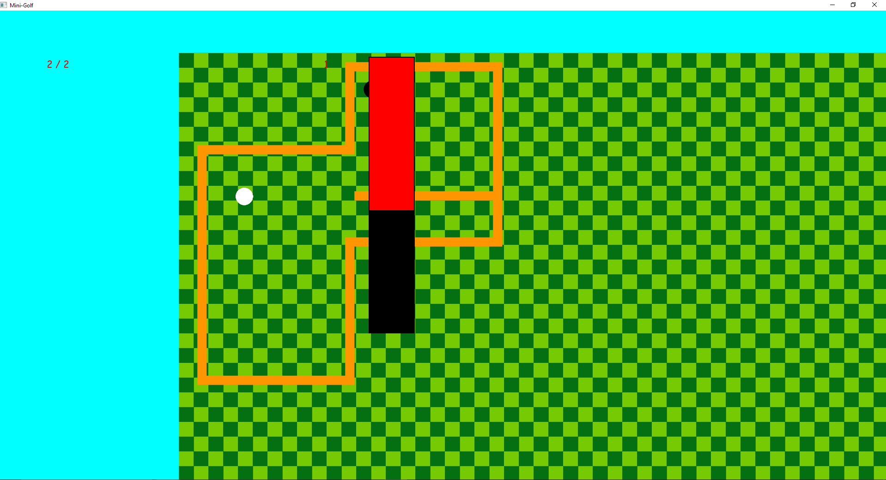
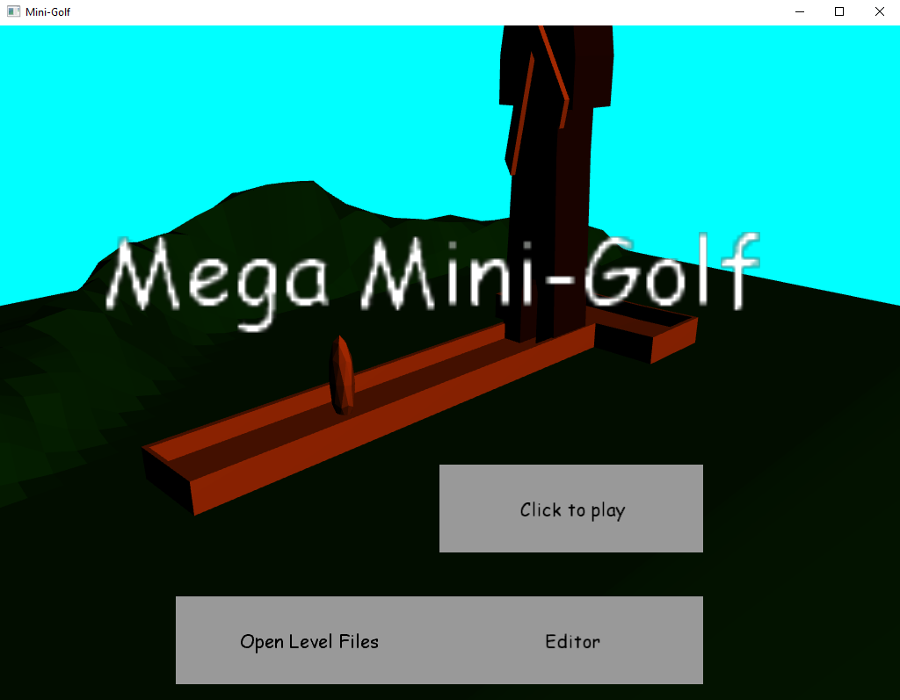
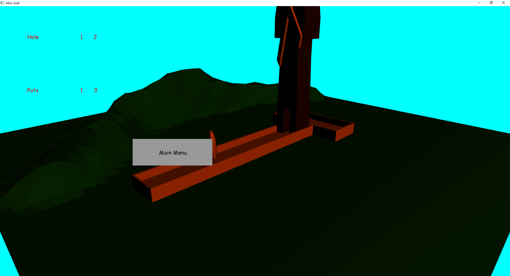

A mini golf game made in DX11 / DXTK for a 2nd year University project.
This project was created for a University assignment to use DirectX11 to render in 3D and create a game. The game could be 2D or 3D but had to have some form of 3D rendering in the game. This was the first time I had made any kind of 3D renderer, so I opted for a 2D game with a 3D menu. I had a lot of fun whilst creating this project, as a game of golf requires a lot of physics, and it was my first time toying around with any form of that in a project. I also created a basic level editor for the game where you could create your own levels with ImGui. I think this project is where my love for creating tool's to make a game first came from, as I later went on in my third year group project to make a game engine for the PS5 and made quite a few tools for the designers to create levels with.




As this was my first project with any form of 3D rendering within, it took some time to get an understanding as to what was actually happening and how. This was a big hurdle to get over, but allowed me to go on to creating some much greater features using rendering techniques later on in other projects.
During this project with the amount of time I spent on making the physics and level editor I learned a lot about optimising collisions, and what feels good to be able to do when given the option to create your own levels. I also learnt the basics of 3D rendering and how that actually works in games.